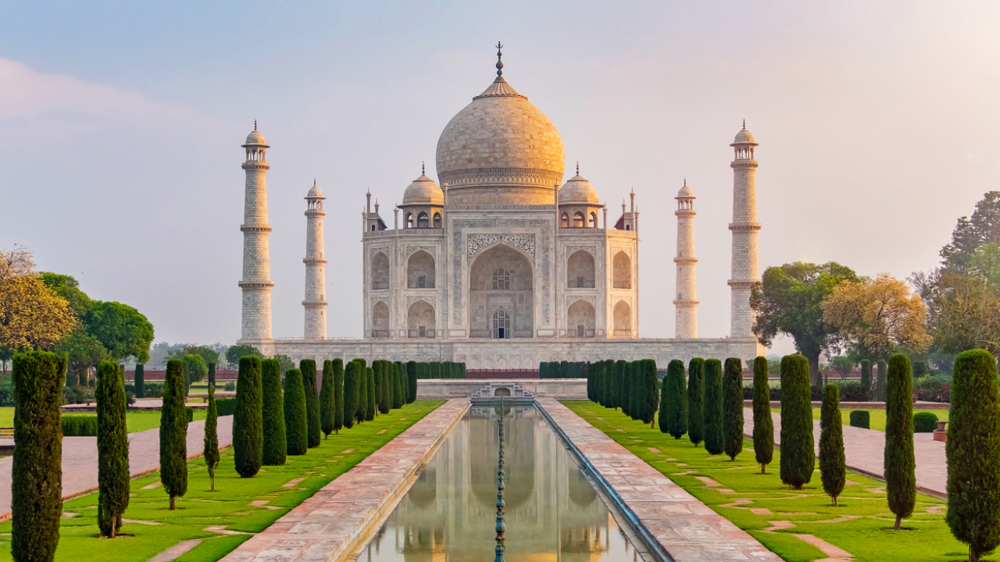

Taj Majal

La construcción del mausoleo se completó en 1648,
pero el trabajo en otras fases del proyecto continuó
durante otros cinco años. La primera ceremonia celebrada
en el mausoleo fue una celebración de Shah Jahan, el 6 de
febrero de 1643, del 12º aniversario de la muerte de Mumtaz Mahal.
Se cree que el complejo Taj Mahal se completó en su totalidad
en 1653 a un costo estimado en ese momento en alrededor de 5
millones de rupias , que en 2023 serían aproximadamente 35
mil millones de rupias ( 77,8 millones de dólares estadounidenses ).